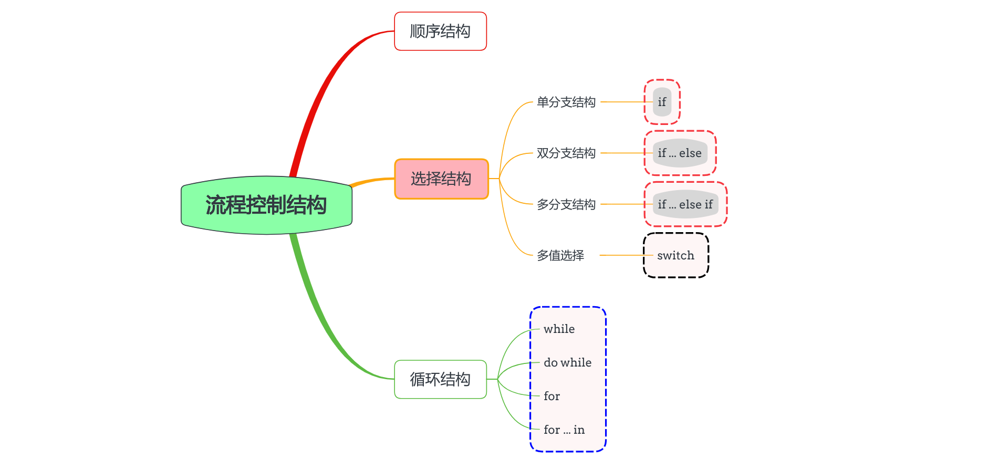
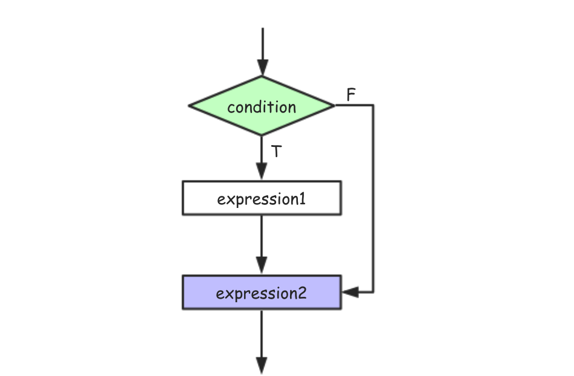
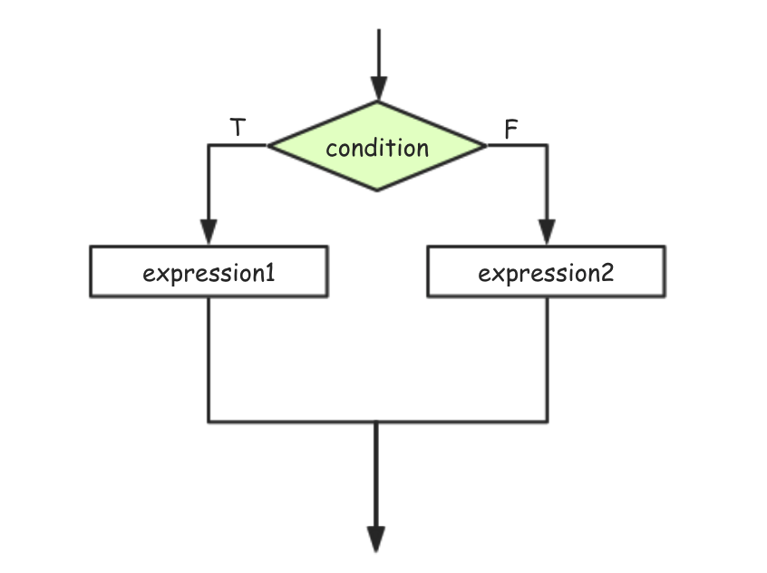
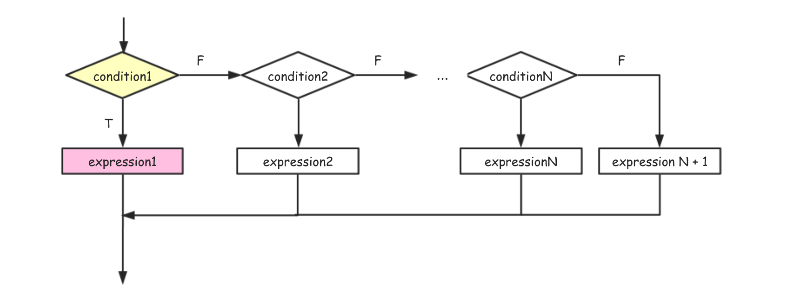
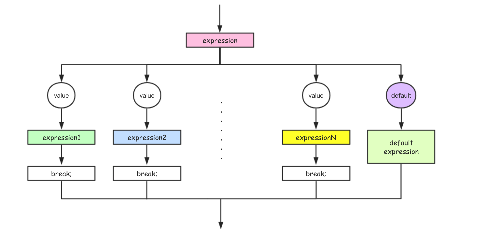
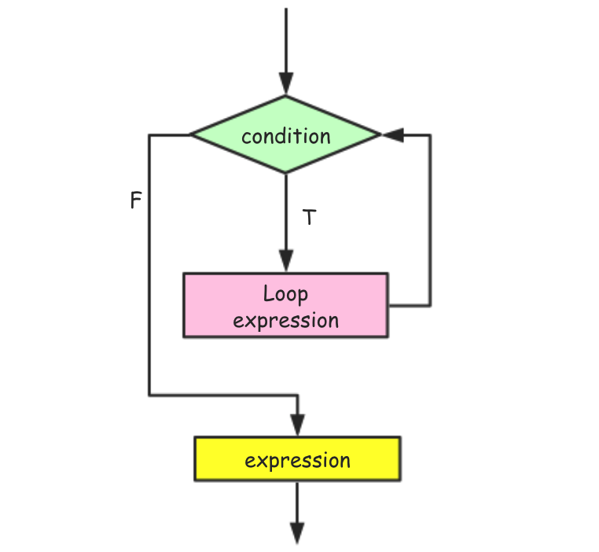
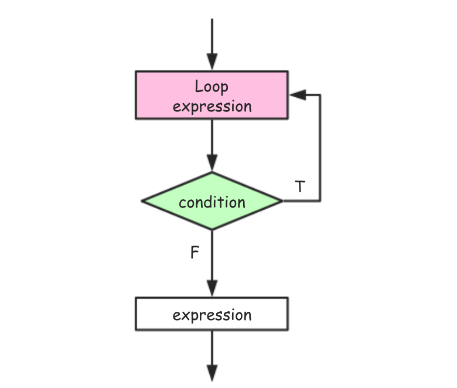
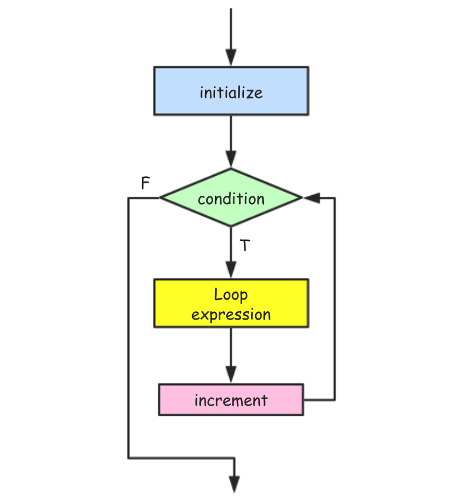
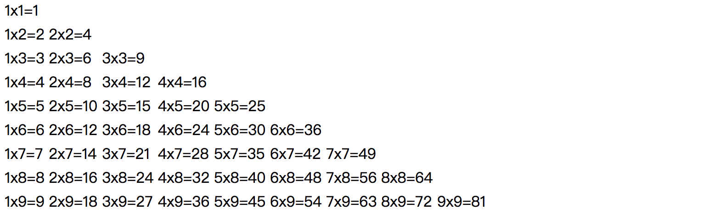

javaScript系列 [18]-流程控制

JavaScript程序是一系列可执行语句的集合。
默认情况下，JavaScript解释器依照语句的编写顺序从头到尾，从上到下的依次执行，这种默认执行代码的结构其实就是 顺序结构。而除了顺序结构外，JavaScript中还有一些特定的控制语句能够改变代码的默认(顺序)执行方式，这些特定的控制语句总体上可以分成 条件语句、循环语句和跳转语句。
以上，根据它们的执行特点我们可以总结出JavaScript中的流程控制结构有三种，分别是顺序结构、选择结构 和 循环结构。 JavaScript程序在执行的时候默认就是 顺序结构，因此下文将主要讲解其它两种流程控制结构和基本用法。
JavaScript中选择控制语句主要有单分支(if)、双分支(if..else)、多分支(if..else if...)和多值选择(switch)等，接下来分别对它们进行介绍。
① 单分支结构
javaScript语言中的单分支选择结构主要使用if语句来实现。
单分支选择结构流程图

语法示例
if ( condition ) {
expression1;
}
在上面的语法结构中，if后面的圆括号( condition )编写是判断的条件(通常是条件表达式)，条件表达式的结果应该为布尔类型值(如果不是布尔值则会调用Boolean函数转换为布尔值)，在单分支结构语句中，当条件为“真”的时候，执行if里面的代码，当条件为“假”的时候，那么不执行if里面的代码，而会执行 if 语句后面的代码。1
2
3
4
5
6
7
8
9
10
11
12
13
14
15
16
17
18
19
20
21
22/*演示 单分支if语句的基本使用*/
/*01 满足条件执行一条语句 {} 可以省略*/
var flag = true;
if (flag)
console.log("-----");
console.log("---end---");
//-----
//---end---
/*02 满足条件执行代码块*/
var age = 20;
if (age >= 18)
{
console.log("Hi,你已经是成年了~");
console.log("该自己对自己负责了。");
}
console.log("---end---");
//Hi,你已经是成年了~
//该自己对自己负责了。
//---end---
② 双分支结构
双分支选择结构主要用if-else语句来实现，在双分支结构中，当条件为“真”的时候执行if语句后面的代码，当条件为“假”的时候执行else后面的代码。
双分支选择结构流程图

语法示例
if ( condition ) {
expression1;
}else {
expression2;
}
expression3;
1 | /*演示：双分支选择结构的代码示例*/ |
③ 多分支结构
多分支选择结构主要用if-else if-else语句来写，在多分支结构中，当前面的条件为“真”的时候，将不会判断后面的条件，当前面的条件为“假”的时候，会继续判断后面的条件，直到符合条件为止继而执行相应的代码块。
多分支选择结构流程图

语法示例
if ( condition1 ) {
expression1;
}else if( condition2 ) {
expression2;
}else if( condition3 ) {
expression3;
}else {
expression4;
}
expression5;
1 | var score = 98; |
说明 在多分支语句中，当条件表达式满足前面的条件时，会执行前面的语句，尽管布尔语句同时也满足后面的条件，但并不会再执行后面的分支语句。
④ 多值选择结构
多值选择结构主要通过switch-case语句来实现。
多值选择结构流程图

多值选择结构语法1
2
3
4
5
6
7
8
9
10
11
12
13
14switch(n){
case 1: //如果n==1,那么从此处开始执行
//执行代码块1
break; //停止执行switch语句
case 2: //如果n==2,那么从此处开始执行
//执行代码块2
break; //停止执行switch语句
case 3: //如果n==3,那么从此处开始执行
//执行代码块3
break; //停止执行switch语句
default: //如果n的值非1\2\3，那么执行下面的代码
//执行代码块4
}
当switch后面圆括号()中表达式的值与某个case后面的值匹配时，则执行这个case后面的语句。在匹配的时候会按照从上之下的顺序依次执行，如果表达式的值与所有case后面的值都不匹配，则执行default后面的语句。
语句中的 break 用于结束多值选择结构语句，如果没有 break 则会从满足条件的case开始顺序执行完整个switch语句(这种情况被称之为case穿透)，直到遇到break为止。在大多数情况下，我们都应该使用 break 语句来终止每个 case 语句块。
ECMAScript标准允许每个case关键字跟随任意的表达式。在执行的时候，会先计算switch后面()中的表达式，然后按照从上到下的顺序来计算每个case后面的表达式，直到case表达式的值和switch后面表达式的值匹配位置。需要注意的是，
它们在进行匹配的时候实际上使用的是全等判断(即不会进行有任何类型的转换）。
1 | var day=new Date().getDay(); |
备注 虽然我们在开发中大多数情况下，default 语句都是出现在switch结构的末尾，位于所有case的后面，但实际上 default 可以被卸载switch语句内的任何位置。
和大多数编程语言一样，JavaScript语言中的循环控制结构也无非while、do-while以及for循环三种。说明 JavaScript中主要用来枚举对象的 for..in 、数组的 forEach 方法、map 方法以及新标准中的 for..of 等循环遍历方法，在此处暂不做介绍。
while循环结构
执行 while循环结构 语句的时候，先判断while后面的条件是否为“真”，如果为“真”那么就执行一遍循环体，然后继续检查条件是否为“真”，重复这个过程，直到while条件为“假”时停止。
如果条件一直为“真”，循环体中又没有结束循环的语句时，代码就会陷入到死循环。
while循环流程图

while循环语法和代码示例
while(condition)
{
expression;
}
1 | var i = 0; |
do-while循环结构
do-while循环流程图

do-while循环语法和代码示例
do{
expression;
}while(condition);
1 | var i = 0; |
do/while循环和while循环非常相似，它们的区别在于do-while循环是在循环的尾部而不是顶部检测循环表达式是否满足条件，这也意味着do-while循环的循环体将至少会执行一次。
for循环结构
for循环 提供了一种更方便的循环控制结构，它在while/do-while循环模式的基础上进行了简化。for循环语句 直接将循环条件的初始化、检测和更新三步操作明确的声明为语法的一部分，更直接简洁。
for循环流程图

for循环语法
for(initialization; condition; increnment){
expression;
}
在 for 循环中，initialization(初始化表达式); condition(循环条件表达式); increnment(计数器变量更新)三个表达式之间需要使用分号来进行分隔，它们分别负责计数器的初始化操作、循环条件判断以及循环计数器变量的更新操作。接下来，简单说明for循环的工作机制。
在整个for循环结构中，initialization 初始化表达式只会在循环开始前执行一次，然后检查condition 循环条件表达式的值是否为”真”，如果为”真”那么就执行循环体中的代码，最后执行increnment 计数器变量更新表达式。然后，接着检查循环条件的值是否为”真”，如果为”真”那么就执行循环体，重复这个过程，直到循环条件的值为”假”或者在循环体中遇到break语句才会结束循环。
1 | /*嵌套for循环实现打印99乘法表*/ |
打印九九乘法表

备注 在 for 循环中的三个表达式中任何一个都可以忽略，省略三个都可以忽略，但至少要保持其结构的完整性(即不能省略两个分号)，最简单形式是for( ; ; ){ ... }，不过这将构成一个死循环同 while(true){...}一样。